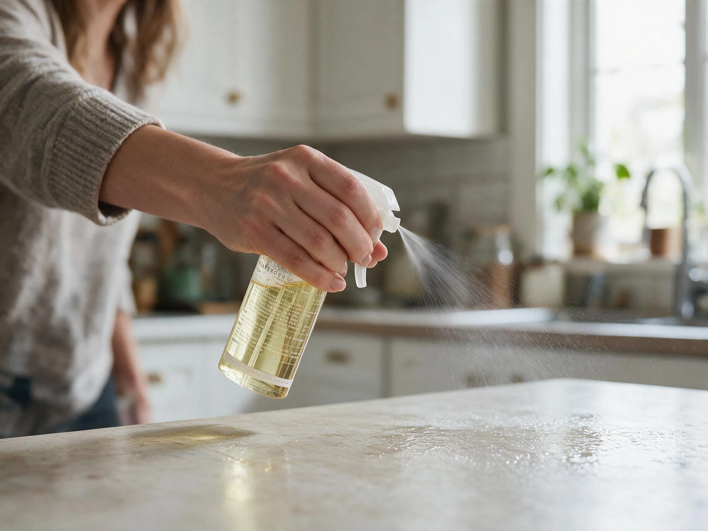
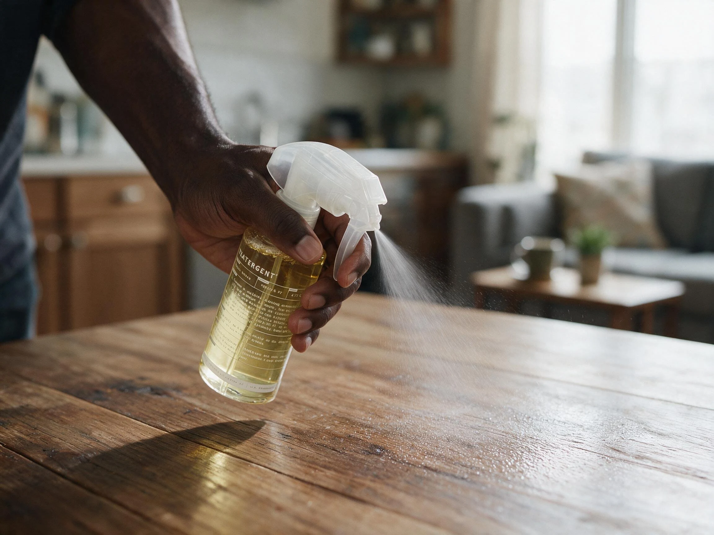
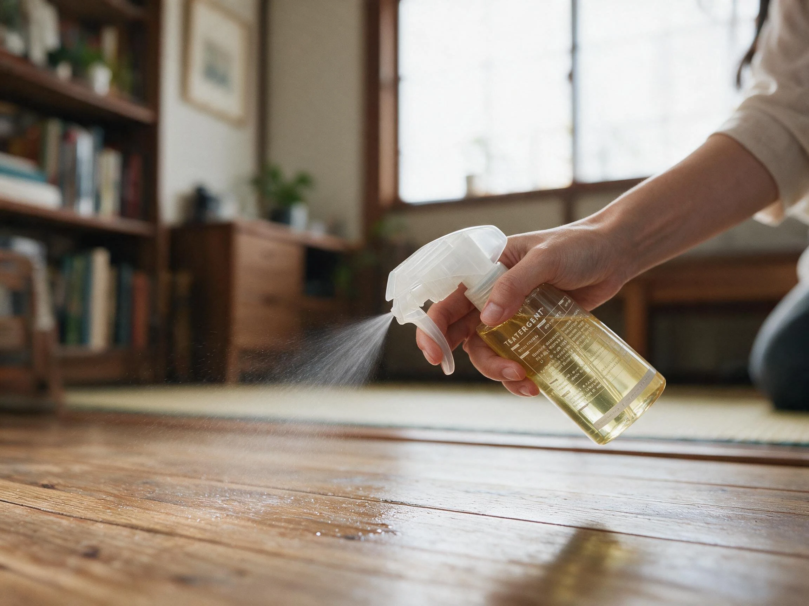
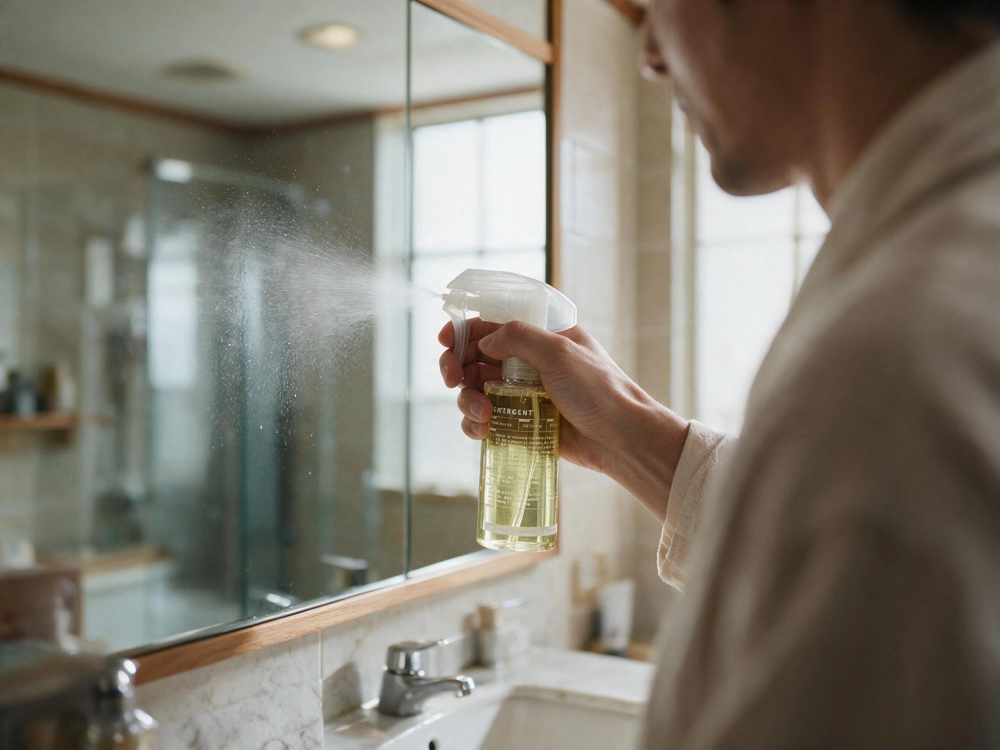
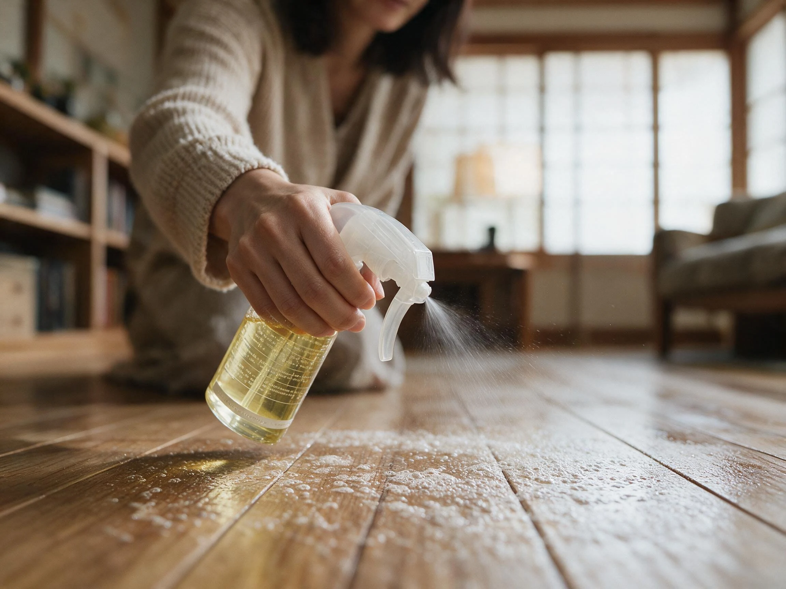
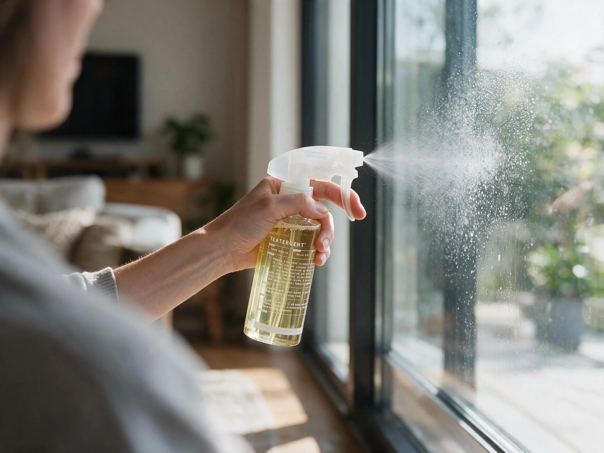
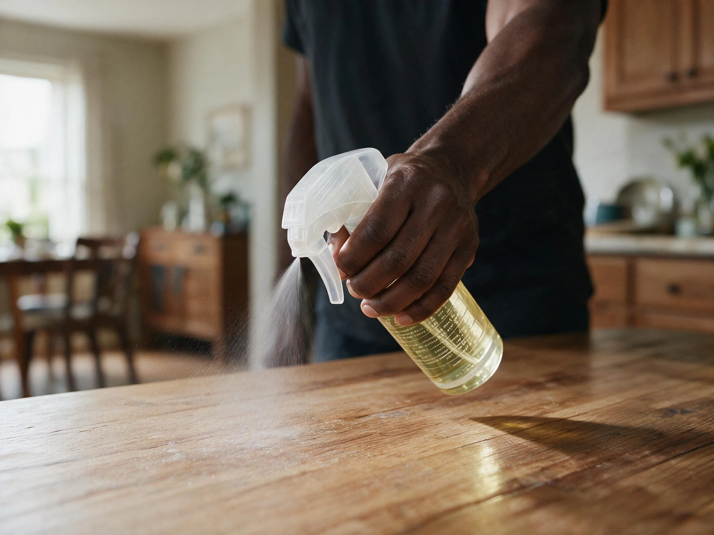
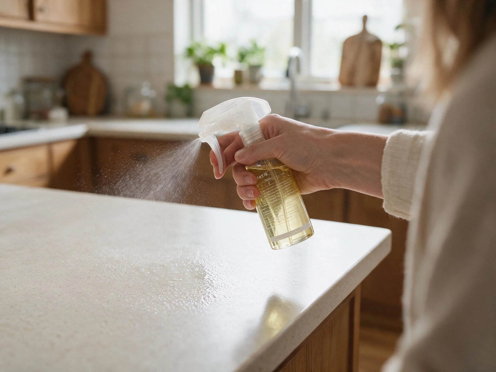

Clean with Tea Extracts
Powerful. Food-grade.
Made for a healthier home.


The Hidden Power of Tea
Tea can be a powerful cleansing agent when concentrated 300 times or more. This simple principle is the foundation of Teatergent.


Why This Product Exists
We do not want unnecessary synthetic chemicals in our detergents that may interfere with our endocrine system, affect our immune system, contaminate our living environment, or compromise our health.
We wanted something simpler.
A food-grade detergent derived from tea, made with ingredients we can understand and trust.


Dissolvable Tablets
We turn concentrated tea extracts into a dry powder, then compress the powder into tablets. Because we do not want to sell you a bottle that is 85% water. Simply dissolve one tablet in water before use.

Grease Decomposer
Tea extracts are effective at breaking down oils and removing grease. Spray onto the surface, then wipe clean.

Microorganism Inhibitor
Tea extracts help suppress microbial activity that can cause unpleasant odors. Use it to wash clothes, reduce unwanted odors, and help keep your washing machine clean.